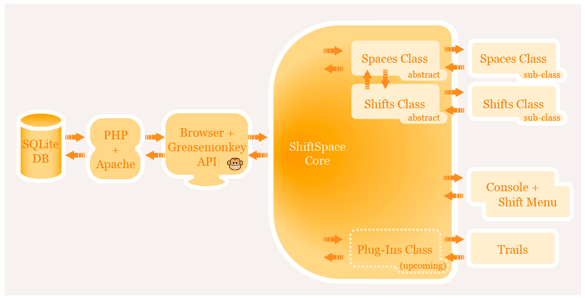
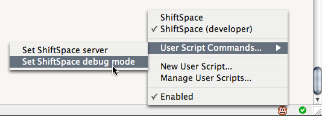

This section presents a broad overview of the concepts and technologies that compose the ShiftSpace platform. The ShiftSpace client software is written entirely in JavaScript, but depends on the Greasemonkey and MooTools frameworks, which are described below. A tutorial is also provided here to help illustrate the initial stages of developing a new Space.
Developer Guide
Introduction
About ShiftSpace
While the Internet's design is widely understood to be open and distributed, control over how users interact online has given us largely centralized and closed systems. The web is undergoing a transformation whose promise is user empowerment—but who controls the terms of this new read/write web? The web has followed the physical movement of the city's social center from the (public) town square to the (private) mall. ShiftSpace attempts to subvert this trend by providing a new public space on the web.
User scenario
ShiftSpace is a browser extension that provides its users tools (Spaces) with which to create content (Shifts) on top of any web page. Once a user has installed the software and signed in, they can browse Shifts that have been left on the page previously or create new Shifts of their own.
If Shifts are available on the page a small notifier will peak into the page in the lower-left corner of the browser. Clicking on the notifier or pressing [shift] + [space] launches the ShiftSpace Console along the bottom edge of the screen. The Console allows the user to browse through a list of available Shifts, then show and hide them as desired.
If the user clicks on a Shift in the Console, that Shift's Space will launch and the selected Shift will be displayed. Spaces provide the environment in which to view and modify a specific kind of Shift. For example the Highlights space presents the interface needed to select a highlight color, mark a portion of the page, and save the result.
The user can also create Shifts by holding down the [shift] key, which reveals a small [+] icon next to their cursor. By holding down the [shift] key and hovering over the icon, a menu of icons allow the user to choose from each installed Space to create a new Shift of that type. Upon creating a Shift, that Shift's Space will be invoked (if it's not already open) and a new empty Shift for that Space will be displayed.
The user can also use Trails (a kind of ShiftSpace plug-in), which allows the user to connect different Shifts across the web. From the Console the user may delete their own Shifts, modify the private/public status of their Shifts, notify the development team of bugs, collapse the Console and logout.
Browser technology
Firefox is pretty much the de facto development environment you should be using if you're going to write Spaces for ShiftSpace. The first thing you should do is install the Firebug extension. Firebug provides tools for inspecting the page, doing line-by-line debugging, and a slew of other features.
ShiftSpace's architecture is based on the Greasemonkey Firefox extension, which allows us to easily and securely inject JavaScript code into any page. Please install the latest release of Greasemonkey before using or developing for ShiftSpace.
The Greasemonkey model of injecting user-installed JavaScript is catching on in other browsers beyond Firefox. There are a number of Greasemonkey clones available for other browsers, most noteworthy of which are:
While we don't currently support these other browsers officially, we are trying to keep our code as compatible as possible so that we might support them in the future.
JavaScript
ShiftSpace is written almost entirely in JavaScript. A lightweight server back-end is written in PHP, but most of the functionality of ShiftSpace happens in JavaScript on the client-side. JavaScript is the only language you need to know to hack on ShiftSpace. Even if you aren't very familiar with JavaScript, the ShiftSpace platform might offer a gentle introduction to hacking your web experience.
Hacking tips
JavaScript is a very flexible language and can be used (and misused) in a variety of ways. Here are some general guidelines you might want to keep in mind before diving into creating your own Space for ShiftSpace:
-
Use the var keyword when defining variables. While code may continue to work without including it, it will define your variable in the global scope which may lead to unexpected results.
var goodVariable = "foo"; // Good badVariable = "bar"; // Potentially harmful
-
Be descriptive with your naming conventions. Don't call things x or data, except in the case of simple iterators or temporary variables.
-
Use the Firebug JavaScript console to try things out.
-
Be consistent how you indent things. This will make debugging much easier! We don't advocate for a single style (you may notice a variety of different styles in the ShiftSpace codebase), but for your own sake choose a style that will allow you to look at your code in the distant future and understand what it does.
- Comment your code both so you can later remember what you wanted it to do, so others can access it if you need some help, and so others might learn from you a trick or two.
-
Don't be afraid to ask for help on the ShiftSpace developer list.
Reference links
JavaScript is very easy to learn, but covering it meaningfully is outside the scope of what this guide can offer. However there are many good JavaScript references out there already. The following links may be useful for learning more about the language:
- Mozilla Developer Center
- JavaScript: The Definitive Guide
- QuirksMode, a good reference on browser quirks
- Simon Willison's presentation A (Re)-Introduction to JavaScript (which is also available in HTML form in the Mozilla Dev Center linked above)
Greasemonkey
Greasemonkey is a browser extension for Firefox that allows you to augment your browsing experience through a variety of installable "userscripts". These are similar to bookmarklets (or "favelets"), except that they execute automatically instead of being initiated by the user. In both cases they are composed of JavaScript code that is invoked by the user's browser and not the original webpage itself.
How it works
Once a page finishes loading, Greasemonkey looks through all the installed userscripts and executes those whose pattern matching rules include the page's URL. ShiftSpace's userscript matches on the pattern "*" by default, meaning it will execute on every page regardless of URL. Greasemonkey allows you to customize when userscripts execute (and are prevented from executing) through the window accessed from Tools → Greasemonkey → Manage User Scripts...
This window also allows you to disable ShiftSpace, or any other userscript. You can also enable and disable userscripts by right-clicking (ctrl-clicking for Mac users) on the Greasemonkey icon in the status bar. Left-clicking on that same icon will allow you to toggle Greasemonkey on and off entirely.
Programming implications
Greasemonkey operates almost as if it were included in a <script> element in the page's source code, except for some important exceptions. One of the most convenient features of Greasemonkey is its ability to load files dynamically with its own GM_xmlhttpRequest method, which isn't bound to the same-domain security policy as JavaScript.
The other important distinction is that Greasemonkey executes its scripts within a special sandbox that wraps each DOM node in a wrapper to prevent the page's scripts from mucking with Greasemonkey's scripts. This second difference makes it important that you avoid certain coding practices.
For instance, the onclick style of attaching events is not allowed through the sandbox, while the W3C style of adding event listeners does work:
var link = document.getElementById('myLink');
// This won't work
link.onload = myHandler;
// This will work
link.addEventListener('click', myHandler, false);
The reason the latter, but not the former, works is that the sandbox wrapper object only implements a subset of the interfaces offered by the actual DOM nodes. This might seem more limiting than it actually is, especially once you rely on JavaScript frameworks like MooTools to abstract these kinds of differences away.
For more details about these differences, and the historical reasons they exist, take a look at the security page of the Greasemonkey wiki.
Reference links
For more information about coding for Greasemonkey, check out the following:
- Greasemonkey documentation
- Dive Into Greasemonkey
- Greasemonkey Hacks
- Userscript repository
- Greasemonkey presentation slides from Aaron Boodman and Mark Pilgrim
ShiftSpace architecture
The ShiftSpace platform seeks to provide a simple, extensible set of tools for users and developers to add additional meta content to the web. The following diagram should help illustrate how various components in the system relate to each other.
Debug mode
About the new debugging sandbox.
Debug mode is a convenient way of debugging your code, provided through Greasemonkey up to version 0.7.20070607.0. The latest Greasemonkey release does not support debug mode (aka unsafe window) as it introduces optional security holes. We are currently working on an code sandbox that will provide an alternative to debug mode. Until we have that ready for you, we recommend you download Greasemonkey version 0.7.20070607.0 and be sure to test only on localhost or on your own websites, it is not recommended to browse the web with debug mode turned on.
Normally ShiftSpace runs entirely in the GreaseMonkey sandbox. This prevents GreaseMonkey user scripts from interfering with scripts on the page and vice versa. However this poses a problem when developing code for a Space- when an error occurs in your code you will almost certainly get a line number and message that is not useful. To make debugging Spaces more pleasant we have a provided a special debug flag which is enabled by default that breaks the wall down between the GreaseMonkey sandbox and any Javascript code present on the web page being viewed.
When debug mode is enabled, ShiftSpace injects any installed Spaces as script tags directly into the page. This allows Firebug to give you precise line errors as well as the ability to set breakpoints, view the function stack, analyze objects, and run performance tests. When writing complex Spaces this level of debugging control becomes very important and time-saving. There is of course an implied security hazard here. A well crafted piece of malicious Javascript on a website could use this hole to hook into ShiftSpace and do all kinds of nefarious things. We strongly recommend that you test your Space only on trusted sites or ones local to your machine while in debug mode.
There are a couple of additional issues to be aware of in debug mode. Besides injecting all client Spaces, we also inject the MooTools framework (described in the next section) so that client Spaces will run properly. MooTools is not compatible with any other Javascript Framework (i.e. jQuery or Prototype). This means that your script will probably behave erratically on any site that makes heavy use of Javascript. Again we recommend that you test on a site local to your computer or on a site without a significant amount of Javascript.
When you are ready to test your Space in the wild, you should turn off debug mode by setting the option in the User Script Commands GreaseMonkey menu.
MooTools
ShiftSpace makes use of the MooTools JavaScript framework. You may be asking, "why MooTools instead of one of the wildly popular frameworks like Prototype or jQuery?" While these choices often boil down to matters of religion or personal taste, we think there is some objective justification for our choice.
Firstly, MooTools is actually very similar to Prototype and intentionally immitates common patterns found in other frameworks. But the main reason we chose MooTools is for its Object Oriented code support. MooTools's inheritance model is simply better documented, and is designed to encourage programmers to extend the framework rather than just reuse prefab code.
This difference focus can be observed by comparing the inheritance-oriented of MooTools's documentation versus the subject-oriented nature of jQuery's or Prototype's. We opted for MooTools because the design of the framework is uniform and because it was designed with Object Orientation in mind from the very beginning. This design closely matches our goal of making ShiftSpace an easily extensible meta-layer over the web.
Classes
One of the basic constructs of Object Oriented Programming (OOP) is the Class. A Class wraps data and methods (functions) that act on this data into one nice little package. Back in the old days of C programming, you had your data structures in structs and a whole bunch of independent functions for operating on them. At some point someone realized the pattern and decided it would be more efficient to join these together through the design of the language itself.
If you have ever written code in Python, C++, Java, or Ruby the Object-Oriented model of programming should be familiar to you. MooTools makes it easy to write Classes and extend from those of others. Initially you can simply extend from the base classes, ShiftSpace.Space and ShiftSpace.Shift, which handle much of the complexity of extending the platform while allowing their methods to be redefined and customized.
JavaScript, while imminently flexible, lacks many of the Object Oriented features that allow for code reuse through extension and inheritance. In MooTools, this is how you create a new Class:
var MyClass = new MyClass({
initialize: function() {
// initialize your class here
}
});
The process of building a Space begins by extending from the ShiftSpace base classes. Extending a class, also known as subclassing, looks like the following:
var MySubClass = new MyClass.extend({
initialize: function() {
// initialize your subclass here
}
});
The examples above only define the Class, they do not create instances of the Class. To make an instance of MySubClass you would do the following:
var anInstance = new MySubClass();
Voilà! You now have an instance of MySubClass, which also includes the functionality included with MyClass.
You can find more documentation of the MooTools Class construct in the their documentation or in the tutorial on the subject hosted by CNET.
Elements
Learning a new code framework is never trivial, but fortunately almost all of the convenience operations provided in the other popular frameworks exist in MooTools (and then some). There are a few programming patterns unique to MooTools that you should become familiar with. First is the creation of Elements. The following example illustrates how you might create a link in MooTools vs standard DOM manipulation.
// Standard DOM manipulations
var link = document.createElement('a');
link.setAttribute('href', 'http://shiftspace.org/');
link.appendChild(document.createTextNode('ShiftSpace'));
// The same code, but using MooTools
var link = new Element('a', {
'href': 'http://shiftspace.org/'
});
link.appendText('ShiftSpace');
ShiftSpace offers an extended version of MooTools's Element object, which addresses the problem of CSS from the page effecting your markup. Instead, use ShiftSpace.Element, which may also include other features in the future.
// Instead of this...
var unpredictableDiv = new Element('div');
// ... use this:
var safeDiv = new ShiftSpace.Element('div');
If your Space requires the use of a div element and is invoked on a page that defines a specific set of margins, padding or other styles for divs, safeDiv will reset them back to their default settings, while unpredictableDiv will be different depending on each page's CSS.
The ShiftSpace.Element class offers all of the same functionality as the regular Element, so you can still use everything offered by MooTools.
For more information about the MooTools Element construct, check out its documentation page.
Styles
While ShiftSpace does allow you to use separate CSS files for your Spaces and load them dynamically, MooTools offers convenient helpers, setStyle and setStyles, to set the styles of your elements inline.
$('myDiv').setStyles({
'position': 'absolute',
'left': 80, // No need to specify 'px'
'top': 150,
'background-color': '#FC0' // Instead of "backgroundColor"
});
DOM
As with other JavaScript frameworks you can access nodes in the DOM with the special $() function. This function takes as it's only parameter the element's id attribute and returns its DOM node with additinional helper methods attached.
MooTools also provides a $$() function which takes a CSS selector string and returns an array of elements. This is a special array which can be acted upon as if it was a single Element. All Elements in this list will be affected by a method call as if it were contained within an each iterator. For more about each and other Array conveniences refer to the MooTools documentation.
When adding new DOM nodes to the page, you can use one of the MooTools methods for appending dynamically generated DOM nodes to the document. The most common is injectInside, as in the following:
var myDiv = new Element('div');
myDiv.injectInside(document.body);
Other variations include injectTop, injectBefore and injectAfter. You can find out more about these functions in the MooTools documentation on the Element class.
Events
To build the interface for your Space, you'll need to hook up your JavaScript methods to buttons and other user interface elements. The pattern for this is the following:
$('myButton').addEvent('click', function() {
alert('Hello!');
});
Often, when building the interface for your Space or your Shift, you'll want user interactions to affect instances of your class. Normally events occur in the context of the DOM element where the event originated. This allows for the following to work:
$('myButton').addEvent('click', function() {
alert(this.getAttribute('id')); // Alerts "myButton"
});
Even when object methods are attached to events, this still refers to the object that received the event (in this case, the button), not the object where the method originates.
var myClass = new Class({
initialize: function() {
this.message = 'Hello';
$('myButton').addEvent('click', this.myMethod);
}
myMethod: function() {
alert(this.message); // Won't work
}
});
When the event fires, this refers to the element that generated the event instead of the object with the message property. MooTools provides a function called bind to address this issue. If you have used jQuery or Prototype extensively you may have seen this pattern already. Using bind creates a closure so that the function will be called with this assigned to the object that makes most sense to you. In the second example, the event handler has been bound to the object with the message property.
var myClass = new Class({
initialize: function() {
this.message = 'Hello';
$('myButton').addEvent('click', this.myMethod.bind(this));
}
myMethod: function() {
alert(this.message); // Will alert "Hello"
}
});
Reference links
This summary is far from comprehensive, but MooTools provides much excellent documentation that you can use to familiarize yourself with the platform. The animation effects in MooTool are particularly powerful and well designed. We use this feature throughout ShiftSpace and heavily in the Trails feature of ShiftSpace.
If you run into problems getting MooTools to work, you may try searching the MooTools forums in case your problem has come up before.